Three chemiluminescence-immunoassay bulletins: a reagent reformulation on an existing tumour marker, a brand-new cardiovascular assay pair, and a cosmetic packaging change across the immune reagent bottle line.
Reagent change · to customer
CEA (CLIA) reagent — new version, Lot 20260501
Ref A-ACLIA-26022-CEA(V1.0)-01
Issued 3 Aug 2026 · Haibin Shi
Product CEA (CLIA)‑IVDR only
The Carcinoembryonic Antigen assay kit (CLIA) moves from version 1.6 to 2.0, starting Lot 20260501. The reformulation's whole purpose is tighter correlation with the Roche reference system — current-version CEA has been running a step away from Roche, and the new lot closes that gap.
SKU
Package
P/N
CEA (CLIA)‑IVDR
2×50 T/Kit
105-004213-A0
CEA (CLIA)‑IVDR
2×100 T/Kit
105-004240-A0
CEA (CLIA)‑IVDD is not part of this upgrade.
Method comparison (n = 1,317 clinical sera)
1.083x + 0.065
New vs Current · R² 0.985
0.993x + 0.019
New vs Roche · R² 0.988
Passing–Bablok & Bland–Altman
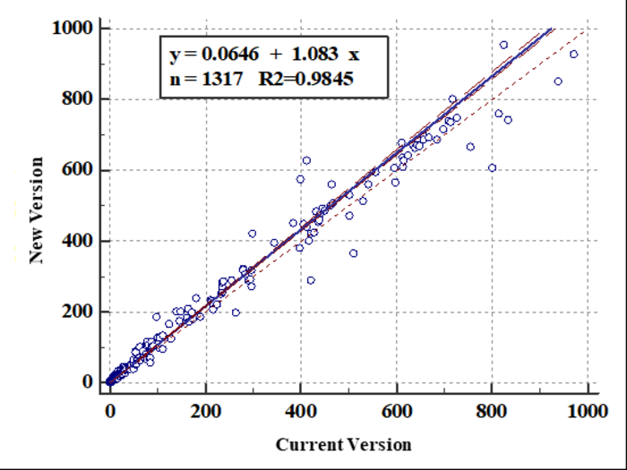
Fig. 1a — New vs current-version reagent, regression.
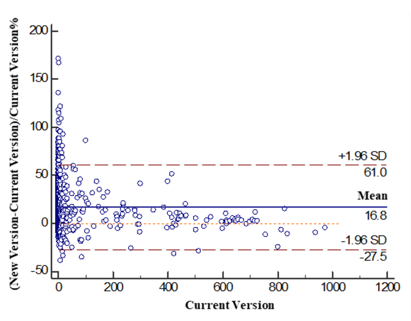
Fig. 1b — same pair, Bland–Altman (mean bias +16.8%).
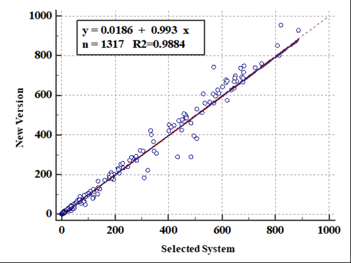
Fig. 2a — New version vs Roche reference, regression.
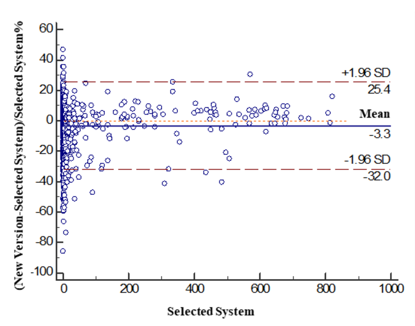
Fig. 2b — same pair, Bland–Altman (mean bias −3.3%).
QC deviation, new vs current version
Every commercial control brand shifts under the new formulation — not an error, an expected consequence of re-targeting to Roche. Direction differs by brand, which is exactly why the target-value sheet matters more than usual this cycle.
Relative deviation by QC brand
Each dot = one control lot/level · New-version result vs current-version result
Reads lower (new < current)
Reads higher (new > current)
EQAS & RIQAS deviation detail ▸
RIQAS results can be grouped by reagent lot number, so assessment-failure risk is low. EQAS results cannot be grouped by lot — some risk of an unsuccessful assessment while both reagent versions are in circulation. Mindray is monitoring EQAS performance for both versions and can supply reference data on request.
Scheme
Sample
Current (ng/mL)
New (ng/mL)
Δ%
EQAS
232201
27.14
25.32
−7%
EQAS
232202
21.81
19.72
−10%
EQAS
232204
9.70
8.94
−8%
EQAS
232205
22.14
19.64
−11%
RIQAS
202602
18.05
22.34
+24%
RIQAS
202604
29.15
34.70
+19%
RIQAS
202605
11.14
13.46
+21%
RIQAS
202606
21.90
26.64
+22%
☑
Do this at each site
Run down existing Lot 20260301 stock before switching (don't alternate lots). Re-import CEA parameters via the reagent QR code. Apply the new-version target-value sheet for the Mindray Tumor Marker Multi Control (enclosed in the new kit) — and for Bio-Rad/Randox QC, request the offline new-version targets from Mindray, since the manufacturers' own websites still only carry the current-version sheet.
Source: A-ACLIA-26022-CEA(V1.0)-01 “Advisory Notice–Technical News (To Customer)”, 3 Aug 2026, pp. 7–10 · original figures reproduced from the same file.
New assay launch
Angiotensin I & II (CLIA) — new cardiovascular panel
Ref A-ACLIA-26026-A I&A II(V1.0)
Issued 29 Jul 2026 · Jinyu Li
Model A I & A II
Mindray adds Angiotensin I and Angiotensin II to the CLIA menu — adjunctive markers of cardiovascular / renin-angiotensin-system function, most relevant to labs supporting hypertension work-up and Plasma Renin Activity (PRA) testing. Both are competitive immunoassays needing careful pre-analytical handling; that handling is the real story for the bench.
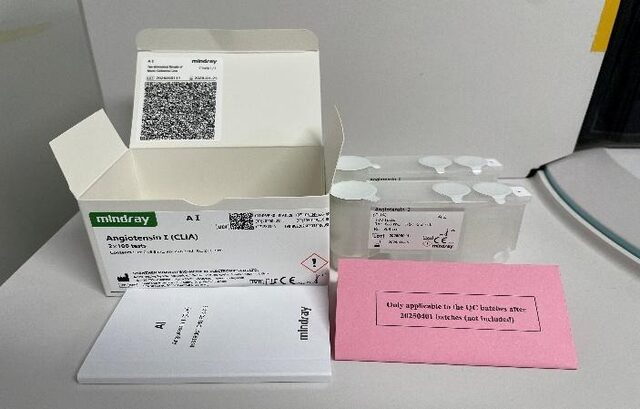
A I Reagent
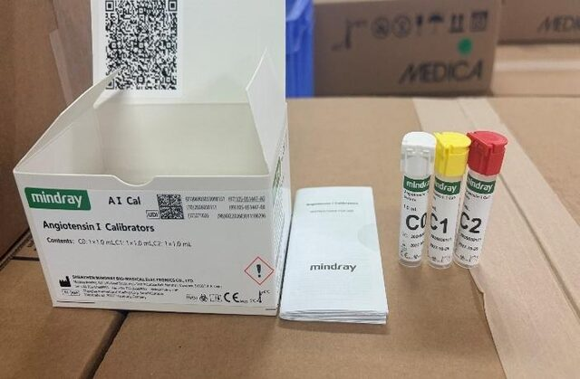
A I Calibrators
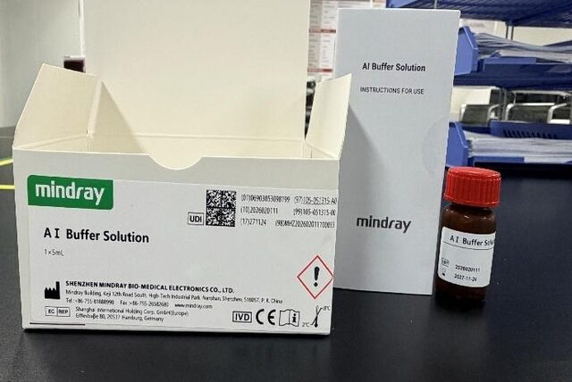
A I Buffer Solution
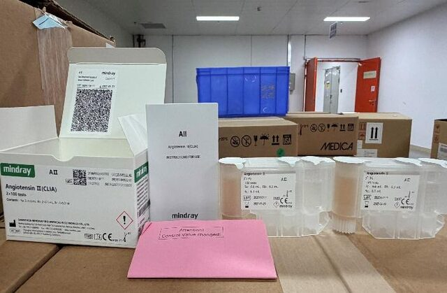
A II Reagent
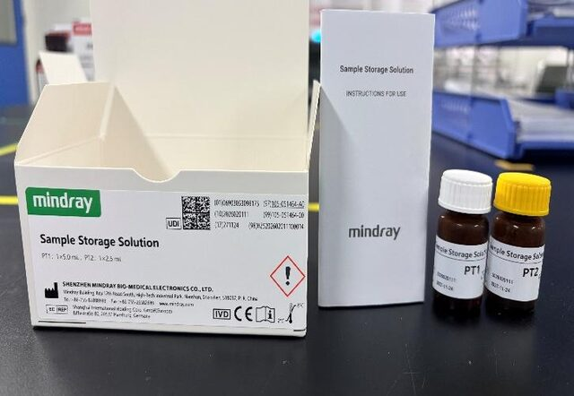
A II Calibrators
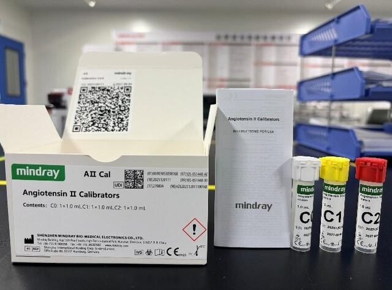
Sample Storage Solution (PT1/PT2)
Parameter
Angiotensin I
Angiotensin II
Linearity
0.1–24 ng/mL
20–1000 pg/mL
Reaction time
≈32 min
≈30 min
Sensitivity
LoD 0.10 ng/mL
LoB 4 · LoD 15 · LoQ 20 pg/mL
Reference range (supine)
0.14–2.24 ng/mL/hr
24.35–60.63 pg/mL
Reference range (upright)
0.22–6.45 ng/mL/hr
49.04–121.28 pg/mL
Within-run / within-lab precision
≤8% / ≤10%
≤6.25% / ≤8.33%
Opened-reagent stability
28 days @2–8°C
4 wks (CL-900i family) / 12 wks (CL-2600i–8200i)
First lot
20260501
20251101
Common to both: 100 µL plasma (K₂-/K₃-/Na₂-EDTA), competitive method, unopened stability 18 months @2–8°C. Control: Hypertension Multi Control from Lot 20250601. A I Buffer Solution and Sample Storage Solution are sold separately — not in the reagent kit box.
Why the workflow needs attention
A I and A II degrade or falsely shift with ordinary handling — room-temperature centrifugation alone can raise measured A I and lower measured A II. PRA testing additionally needs a matched 4 °C vs 37 °C incubation pair, timed to the minute. This is the sequence as written in the bulletin:
1
Dedicate a tube. Draw a separate EDTA tube for A I/A II only — don't share it with ALD, Renin, etc.
2
Pre-load the enzyme inhibitor before the draw: 50 µL Sample Storage Solution PT1 + 25 µL PT2 per 5 mL EDTA tube (ratio sample:PT1:PT2 = 1000:10:5). Invert 5–10×, centrifuge at 4 °C.
3
Keep it cold. If processing is delayed, hold at 2–8 °C and add PT1/PT2 within 1 hour; store sealed below −15 °C if not run immediately. Max 3 freeze–thaw cycles.
4
For PRA: add A I Buffer Solution to the supernatant (plasma:buffer = 10:1), then split into two aliquots and incubate both for exactly 1 hour:
ALIQUOT A · 4 °C
ice-water bath
ALIQUOT B · 37 °C
incubator
5
Load together and select A I for the 4 °C aliquot, A I‑37 for the 37 °C aliquot — track which is which.
6
Calculate:PRA = (A I at 37°C − A I at 4°C) ÷ incubation time. A sample cannot be reused for retest once incubated — re-add buffer to a fresh aliquot instead.
Minimum software version by analyzer ▸
Model
Minimum version
CL-900i series
≥ V08.00.17
CL-1000i
≥ V00.02.28
CL-1200i
≥ V01.02.28
CL-2000i series
≥ V00.01.37
CL-2600i series
supported upon launch
CL-6000i series
≥ V10.00.30
CL-8000i series
≥ V01.00.13
CL-9000i series
≥ V01.00.07
M680 / M980
supported upon launch
M1000
≥ V01.00.09
SAL 6000 / 8000 / 9000
≥ V04.01.32 / V04.00.23 / V10.00.30
Non-CL-9000i/9200i systems only, for now: CL-900i, 920i, 960i, 980i, 1000i, 1200i, 2000i, 2200i, 6000i, 6200i, 2600i, 2800i, 8000i, 8200i.
☑
Do this at each site
Confirm software meets the minimum version before ordering reagent. Import A I/A II parameters by QR code (item-file import only on CL-9000i). Order A I Buffer Solution and Sample Storage Solution separately — they are not in the assay kit. Apply the enclosed Hypertension Multi Control target-value sheet (Lot 250601+).
Source: A-ACLIA-26026-A I&A II(V1.0), 29 Jul 2026, pp. 1–9 · product photographs and workflow reproduced from the same file.
Appearance change · to customer
Immunoassay reagent bottle — mould & seal update
Ref A-ACLIA-26029(V1.0)-01
Applies to non-CL-9000i/9200i bottles
Two cosmetic changes to the immune reagent bottle, made so front-line staff don't mistake either for a defect. First, the four separate bottle-cavity moulds (123-, 23-, 02-, 12-cavity) are consolidated into a single 123-cavity mould — the empty cavities on 23-/02-/12-cavity bottles now show a raised rim and an unslit piercing membrane, instead of a flat surface. Second, the easy-tear film changes colour from grayish-white to pure white, alongside a structural fix for tearing/residue/seal complaints.
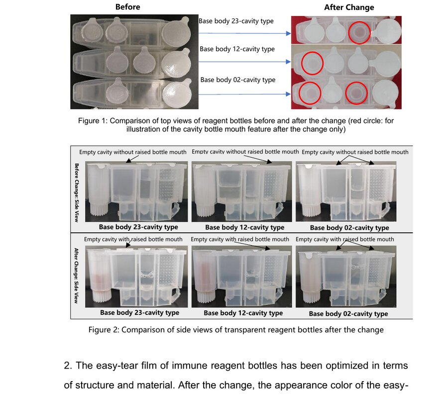
Fig. 1–2 — Top view (before/after) and side view of the 23-/12-/02-cavity bottle types. Red circles mark the new raised, unslit cavity mouths that appear only where a position is left empty.
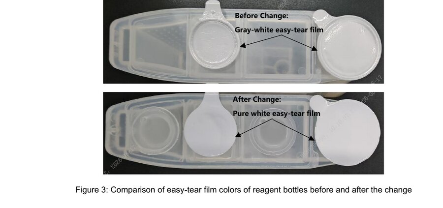
Fig. 3 — Easy-tear film: gray-white (before) vs pure white (after), shown on a 02-cavity transparent bottle.
✓
No action needed on results Bottle material is unchanged; reagent performance and normal use on all corresponding instruments are unaffected. Brief bench staff so the new bottle mouth and white film aren't flagged as a suspected quality issue.
Source: A-ACLIA-26029-Immunoassay reagent bottle(V1.0)-01, pp. 1–3 · figures reproduced from the same file.
Advisory — biochemistry
One bulletin this cycle: a new pancreas-specific amylase reagent for the BS chemistry line, aimed at labs that want better acute-pancreatitis specificity than total amylase gives.
New reagent launch · to customer
P-AMY (Pancreatic Amylase) — commercial launch 30 Aug 2026
Ref A-ASH-26006-008M(V1.0)-01
Platform Mindray BS chemistry series
Total amylase rises with any salivary or pancreatic source; P-AMY isolates the pancreatic isoenzyme, giving materially better specificity for acute pancreatitis (>90%) and better late-window sensitivity — P-AMY stays elevated in 80% of uncomplicated pancreatitis a full week after onset, when total amylase has often normalised. It also has a role in chronic pancreatitis assessment, post-pancreatic-surgery morbidity prediction, and reading biliary-tract disease (e.g. cholecystitis can raise P-AMY up to 4-fold via secondary pancreatic involvement).
Kit
Format
P/N
Applicable analyzers
P-AMY (BS5000)
1×300 tests
105-058525-A0
BS-5000/5200/5400/5600, BS-4000/4200
P-AMY (BS800)
R1 23.5 mL + R2 8 mL
105-054857-A0
BS-2600M/2800M, BS-1000M/1100M, BS-620M
P-AMY (BS120)
R1 23.5 mL + R2 8 mL
105-054855-A0
BS-600M, BS-430/450/460/410/470
P-AMY Calibrator
1×1 mL
105-053163-A0
all of the above
P-AMY Control
L 3×1 mL + H 3×1 mL
105-054862-A0
all of the above
Precision on BS-2800M (CLSI EP05-A3, 20 days)
Acceptance criterion is within-lab CV ≤ 6.5%; every level tested lands far inside that limit, serum and urine alike.
Within-run vs. within-lab CV%
8 specimen levels · dashed line = 6.5% acceptance limit
Within-run CV%
Within-lab CV%
Method comparison vs. Roche cobas c701 (CLSI EP09-A3)
Regression fit vs. identity line
Serum n=172, range 6–1968 U/L · Urine n=137, range 7–1980 U/L
Serum: y = 1.0000x − 1.0000, r = 0.9998
Urine: y = 1.0650x − 2.7870, r = 0.9978
Identity (y = x)
2 / 5 / 5
LoB / LoD / LoQ, U/L
13–53
Serum/plasma ref. range, U/L
<353 / <318
Urine ref. range M/F, U/L
×0.0167
U/L → µkat/L
Calibration, QC & parameter files ▸
Calibration: two-point, using the Mindray P-AMY Calibrator (105-053163-00) plus 9 g/L NaCl. Traceable via ISO 17511 to the manufacturer's selected procedure (Roche reagent + Roche system).
QC: run the Mindray P-AMY Control (105-054862-00), two levels per batch — with every new calibration, new reagent lot, and after maintenance/troubleshooting.
Dilution: results above 2000 U/L → dilute 1:10 with 9 g/L NaCl, rerun, multiply result ×11.
BS-600M / BS-620M parameter files are not online yet — expected 30 Sep 2026.
☑
Do this at each site Where acute-pancreatitis work-up currently relies on total amylase alone, flag P-AMY as the higher-specificity option. Confirm the analyzer's parameter file is loaded before go-live, and hold off on BS-600M/620M until the 30 Sep parameter release.
Source: A-ASH-26006-008M(V1.0)-01 “Advisory Notice–Technical News (To Customer)”, pp. 1–4.
MT-8000 total laboratory automation
One release note, fifteen changes: software EBJ770 brings next-generation analyzer integration, sample-handling refinements, tighter QC control, and workflow polish to the MT-8000 track.
Software / manual upgrade
MT 8000 TLA — software optimization (EBJ770)
Ref A-ATLA-26002-MT 8000(V2.0)
Issued 2 Sep 2026 · Fan Hanwen
V1.0 14 May 2026
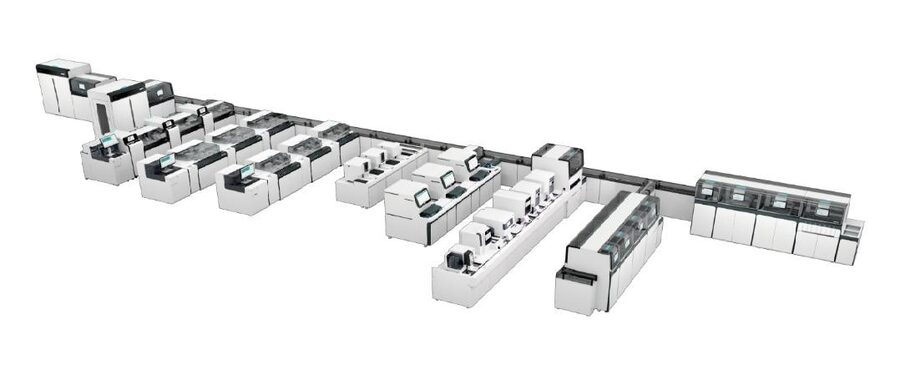
The MT-8000 line — pre-analytical, analytic and post-analytic modules on one track. EBJ770 mainly widens what can sit on that track and tightens the software running it.
Where the 15 changes land
EBJ770 changes by focus area
15 total · 2 added, 13 optimized
2.1–2.2 Next-generation connectivity
2.1
BS-5000 & CL-9000i integration Added
MT-8000 now takes next-generation biochemistry/immunoassay analyzers onto both branch and main track. Not yet in the international market — check with International Marketing before quoting. TLA type must be selected at standalone install; on the ISE module's left side, only SDM or an empty position is allowed next to BS-5000, or track will alarm and disable.
2.2
CX-9600 coagulation integration Added
Full integration — item sync, testing, result management, post-processing, reagent/consumable management. CX-9600 is also not yet available internationally.
The tube's white bottom previously confused height detection; recognition is now correct. Only this specific tube is validated — decapping needs a hardware upgrade (centrifugation compatibility still unconfirmed), and any other brand needs HQ evaluation first.
2.4
Single-tube loading for soft/glass tubes Added
Manually place a centrifuged, decapped tube straight into a single-tube carrier — no gripper handling. BS-5000/CL-9000i configurations only; not available on BS-2800/CL-8000i. Enable in DM: Setup → System → Configure rack pos. view → [Enable single tube] → restart.
2.6
More empty-carrier capacity Optimized
Each extra immunoassay track adds 16 empty carriers, each biochemistry track +12, each ISE track +5. Load empty carriers from the middle of the front-end track.
2.7
Smarter node sample-capacity limits Optimized
Routine (non-STAT) samples are now capped per node so a large biochemistry batch can't block immunoassay samples from entering. Biochemistry +32, immunoassay +25, ISE +11 capacity per analyzer added; overflow queues on the main track. Extra-Urgent samples are exempt from the type restriction — capacity-limited only.
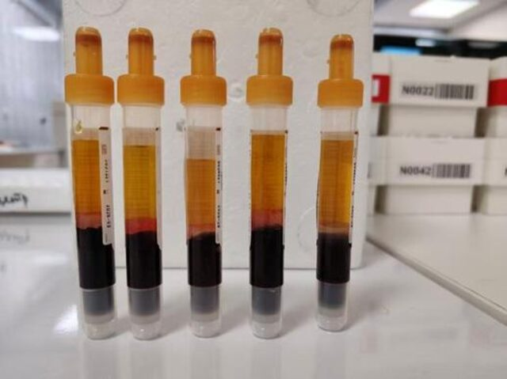
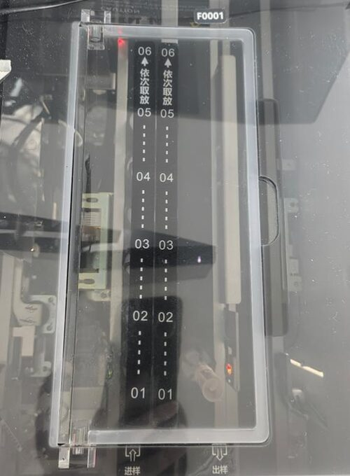
Left — the S-Monovette tube type validated for 2.3. Right — the single-tube loading rack (input/output) used for 2.4.
2.5, 2.8–2.11 Quality control & maintenance
2.5
Next-gen ISE maintenance functions Optimized
System → Maintenance → [Semi-Automatic] adds Clean ISE Electrodes, Electrolyte Tube Auto Maintenance and Electrode Auto Activation. These now only accept the fixed barcodes ISE-D-0001 / ISE-A-0001 — custom maintenance barcodes aren't supported.
2.8
[ERR] samples route straight to the abnormal area Optimized
Samples flagged [ERR] (not xxx.ERR) from a connected BS-2800M/CL-8000i used to auto-rerun and keep cycling the track. They now go directly to the IOM's Sample Abnormal Area.
2.9
QC Plot now sorts by target value Optimized
Controls on the QC Plot interface display left-to-right from lowest to highest target value, consistently.
New [Calculate Age per Birth Date] switch in LIS Upload & Download setup. On: the system computes age from the LIS date of birth. Off: it keeps whatever DOB/age the LIS sent. Prevents mismatches feeding age-dependent reference ranges/rules.
2.11
Absolute-threshold QC with AOC alarm Optimized
Each control can now use [Relative Threshold] (mean + SD, as before) or [Absolute Threshold] (target + upper/lower limit). Absolute Threshold unlocks a [RangeCheck] QC rule — selecting it auto-disables the relative-threshold rules. A result outside the absolute limits raises an AOC flag in Sample Results, the Overview panel, a Tip alert, and a highlight in QC Plot.
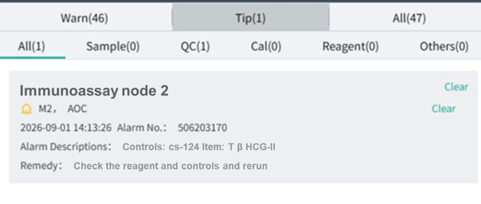
An AOC alarm as it appears in the Tip panel — control out of its absolute range, with the remedy line built in.
2.12–2.15 Result & workflow operations
2.12
Hematology channel numbers can be freed up Optimized
The Hematology [Activate] toggle was previously locked. It can now be disabled per item, releasing a shared channel number (e.g. PCT) for the immunoassay parameter of the same name. Setup → Tests → Test Setup → [Hematology] tab → deactivate the duplicate item.
2.13
Manual rerun gains a repeat-count field Optimized
[Rerun F2] adds a [Replicates] field per parameter. LIS transmission follows [Send Actual Results and Rerun Results]: on sends the original plus every rerun, off sends only the last rerun.
2.14
Auto Rerun rules split by analyzer model Optimized
With BS-2800 and BS-5000 both connected, Result-alarm-check and Sample-characteristic-check rules configure separately per analyzer — switch models at the top of the screen. Dilution-factor dropdowns show a model suffix only where a factor is analyzer-specific.
Sample Vision's enlarged view adds [Forward/Reverse Display] and [Rotate 90°] buttons, so an upside-down or mirrored serum image can be corrected on screen.
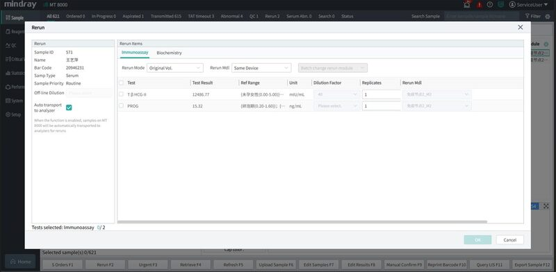
2.13 — the new Replicates column in the Rerun dialog.
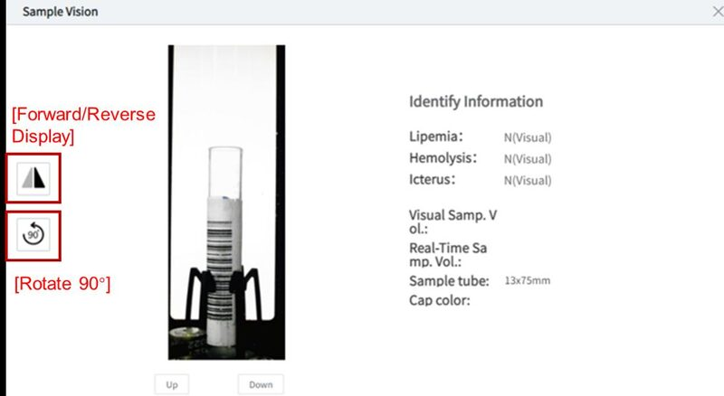
2.15 — Sample Vision's new orientation controls.
Minimum / current software versions by module ▸
Module
Middleware / analyzer
Data acquisition
MT8000 line
Middleware 0.100.00.17801 · SRP 02.09.00.1905
01.39.00.16701
Current biochem & immunoassay
BS-2800 03.01.27.27863 · CL-8000i 01.01.30.25830
01.39.00.16701
Coagulation
CX-9000/9600 01.00.00.13101
01.39.00.16701
Hematology (TM1000)
01.61.00.22447
01.28.00.7246
Next-gen biochem & immunoassay
BS-5000 01.00.02.11665 · CL-9000i 01.00.02.10973 · SDM Plus 02.09.00.1905
planned June 2026
☑
Do this at each site running MT-8000 Confirm current middleware/analyzer versions against the table above before enabling any EBJ770 feature. If the site plans single-tube loading (2.4) or the SARSTEDT tube workflow (2.3), check the analyzer configuration is BS-5000/CL-9000i — BS-2800/CL-8000i sites can't use either. Walk QC leads through the new Absolute Threshold / AOC flag (2.11) before it's switched on, so an AOC alarm isn't mistaken for an instrument fault.
Source: A-ATLA-26002-MT 8000(V2.0), 2 Sep 2026, pp. 1–15 · photographs and screenshots reproduced from the same file.